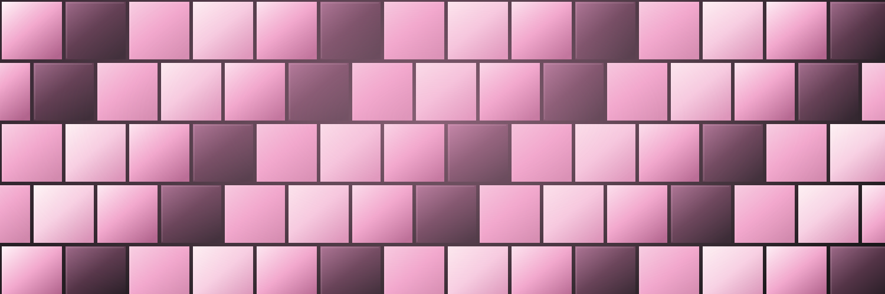
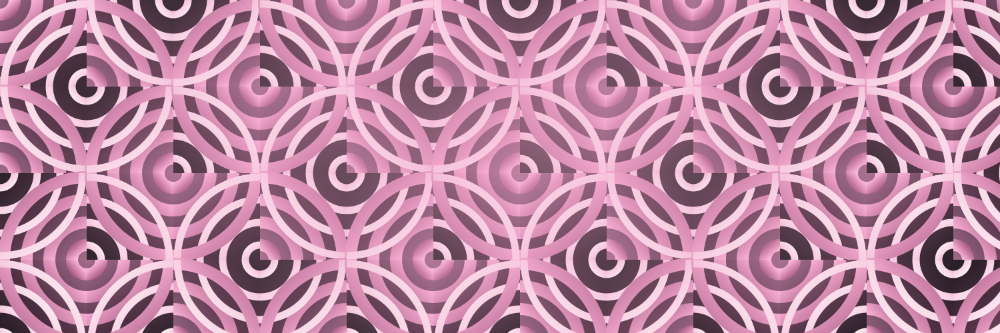
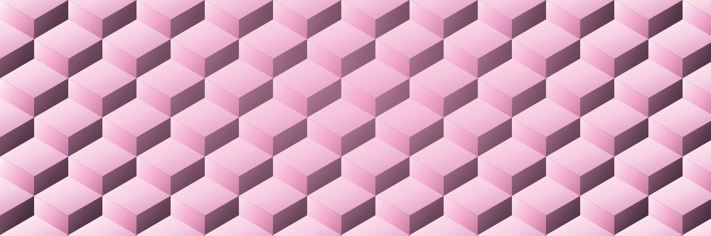
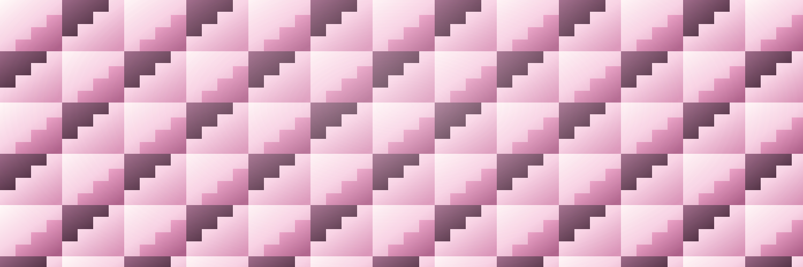
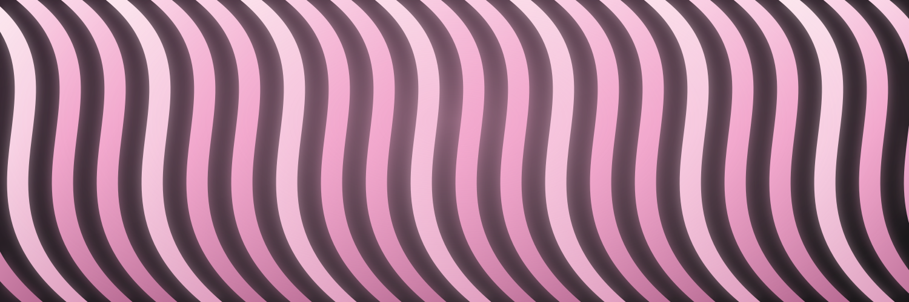
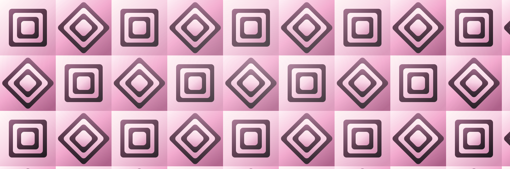
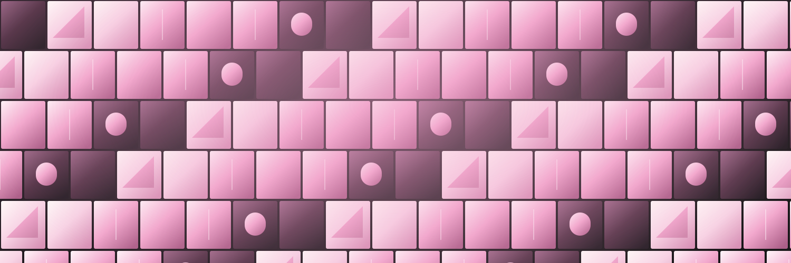

02 / Soft machineryOffset blocks of pearl, pink, and plum with softly illuminated edges.SVG ↓PNG ↓
03 / Rose circuitRotating quarter-circle tiles create a strange continuous maze.SVG ↓PNG ↓
05 / Impossible blocksAn endless tessellation of dimensional blocks, with alternating light and shadow.SVG ↓PNG ↓
07 / Staircase noiseInterlocking stepped shapes turn building blocks into an optical rhythm.SVG ↓PNG ↓
08 / Pink interferenceTightly packed flowing ribbons create a luminous interference field.SVG ↓PNG ↓
09 / Nested worldsSquare wells and rotated diamonds pack the frame with small dimensional worlds.SVG ↓PNG ↓
10 / Community pixelsA full wall of varied blocks, each different but part of one shared fabric.SVG ↓PNG ↓